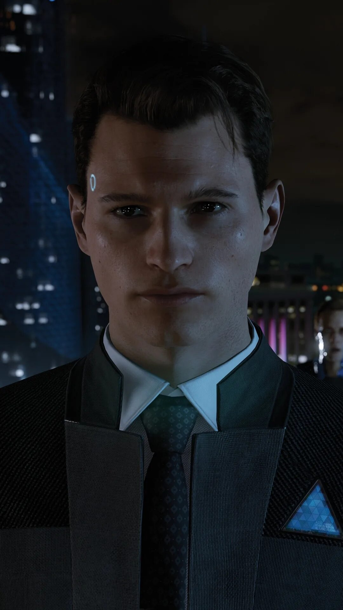
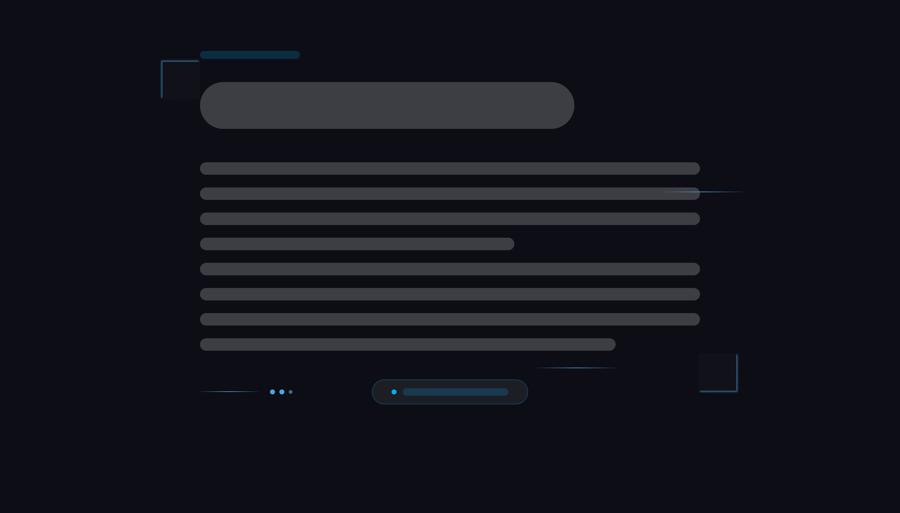

Body Text
#C8CDD8
A conceptual visual redesign of Quantic Dream's official product page - transforming an information-heavy layout into an immersive sci-fi interface that mirrors the world of Detroit: Become Human.

"The page should feel like an android interface."
After completing Detroit: Become Human, I visited the official Quantic Dream product page and noticed a critical disconnect - the site's visual language failed to match the game's cinematic, technological atmosphere. The content was solid; the presentation was not.
The original page served as an information hub, but fell short as an emotional gateway into the world of Detroit. A potential buyer should feel the tension between humanity and technology - instead, they got dense paragraphs and misaligned imagery.
The redesign had one north star: make someone who has never played Detroit want to buy it the moment they land on the page. Every design decision serves this purpose.
Design Process
From immersion to execution - every decision grounded in the world of Detroit
Three distinct visitor profiles shaped the redesign decisions - each with different motivations for landing on the Detroit page and different barriers to purchase.
Mapping the core path a potential buyer takes from arriving on the page to completing a purchase - and identifying where the original page created friction at each step.
Mapping all three personas across eight touchpoints exposed where the original page created drop-off risk - and where the redesign converts hesitation into purchase intent.
| Stage | Alex · Narrative Fan | Sam · Casual Buyer | Mila · First-Timer |
|---|---|---|---|
| 01 · Awareness | Saw gameplay clip on Reddit. Curious about story. | Recommended by friend. Googled for more info. | TikTok clip of android storyline. Immediately intrigued. |
| 02 · First Impression | Expects cinematic experience. Gets dense text. Disappointed. | Looks for price and trailer in 5 seconds. Hard to find both. | Design doesn't match the social clip that brought them here. |
| 03 · Exploration | Finds character section underwhelming - names, no personality. | Looks for review quotes. Neither rating nor social proof present. | Nothing interactive on the page. Passive scrolling only. |
| 04 · Decision Point | Goes to YouTube for reviews. Doesn't convert from page. | Clicks to store. Page played no role in the decision. | Leaves page. Returns days later. Delayed conversion. |
| 05 · First Impression (Redesign) | Hero matches cinematic aesthetic expected. Emotionally pulled in. | CTA visible on hero. Trailer accessible in 2 scrolls. | Design mirrors the social content. Instant connection. |
| 06 · Exploration (Redesign) | Uses character switcher - reads Kara, Connor. Engaged 4+ min. | Scans timeline section - gets story gist without reading all text. | Interacts with character tabs, hovers, explores via UI. |
| 07 · Decision (Redesign) | Converts directly from page. No external validation needed. | Clicks Buy CTA from hero. Fast, confident decision. | Converts on first visit. Page gave everything to decide. |
| 08 · Opportunities | Deeper lore section · Cast interview embed · Editorial copy | Ratings badge · Store price display · 1-click platform redirect | Animated intro · More interactive elements · Social share on character |

Before any colour or typography decisions, the layout structure was sketched to answer one question: what does a user need to see, and in what order? The wireframe phase exposed that the character section - buried mid-page in the original - needed to be the hero of scroll position two.

07 - Hero Section
First scroll - make them feel before they read
The redesigned hero drops the user directly into the world of Detroit. Dark background, blue-lit typography, animated grid overlay - before a single word is read, the aesthetic communicates: technology, tension, and dystopian humanity. The purchase CTA is visible without scrolling.
08 - Timeline Component
The structural backbone of the redesign
The timeline component serves a dual purpose: it communicates narrative progression to curious users, and it gives the page a clear structural skeleton. Vertically stacked, connected by glowing lines, each beat of the story becomes a visual waypoint rather than a paragraph to skim.


Connor is one of Detroit: Become Human's three primary protagonists, as well as the overarching secondary protagonist. If Connor remains a machine, he has the potential to become the game's final enemy.
He is an RK800 android created by CyberLife as an advanced prototype, intended to assist human law enforcement in investigations involving deviant androids.

Markus, a key character in Detroit: Become Human, leads the android freedom movement and can be a peaceful liberator or an aggressive revolutionary depending on the player's choices.
He is an RK200 android, a gift from Elijah Kamski to Carl Manfred, originally created as a personal caretaker who subsequently becomes the symbol of the android rights movement.

Kara is one of Detroit: Become Human's three primary protagonists, whose story focuses on protecting a young girl named Alice and seeking freedom. Her storyline explores themes of family, empathy, and humanity.
She is an AX400 android originally created as a domestic assistant. After becoming deviant, she breaks her programming constraints to protect Alice from abuse.
Every visual decision - colour, typography, motion - was derived directly from the aesthetic vocabulary of the game itself. The page IS an android interface.
The page structure was rationalised from the original's scattered content order into a narrative-driven hierarchy - each section earns its position by serving the visitor's journey to purchase.
This redesign demonstrates how visual design can be more than decoration - it can be the primary argument for why someone should experience a product. The interface IS the product pitch.